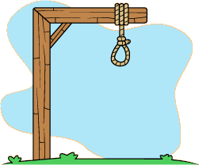

numero de tentativas: 8
jogo da forca é um jogo em que o jogador tem que acertar qual é a palavra proposta, tendo como dica o número de letras e o tema ligado à palavra. A cada letra errada, é desenhada uma parte do corpo do enforcado. O jogo termina ou com o acerto da palavra ou com o término do preenchimento das partes corpóreas do enforcado. Clique aqui para mais informações